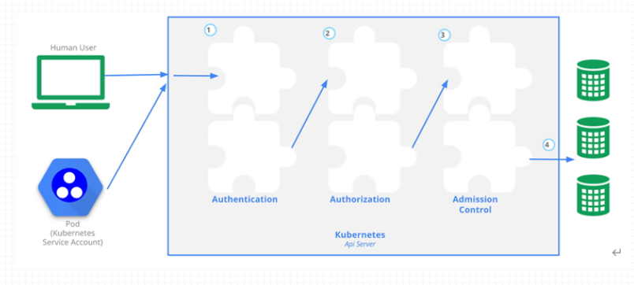

认证、授权和准入控制
认证、授权和准入控制对应的三个单词分别为：Authn、Authz、Admission。
他们分别的作用：
- Authn：由于系统不是开放给所有用户的，因而必须确保来访问系统的是当前系统注册过且允许其使用该系统资源的用户
- Authz：即便能进入同一个场所，不同用户所能够或得的不同资源的操作权限应该不同的。Authz是一个权限管理和分派的功能。
- Admission：Admission本意为审计，但在k8s中其实现的功能比审计更为复杂。他们只发挥在用户的写请求上。它能够实现一些更为独特的功能，主要体现在2方面:
- 校验：用户创建数据时，若用户给定的资源清单中的字段违反了对应资源规范所使用的格式，或赋值违反了其值所应该具有的取值格式，我们应该识别到这种错误，以避免将其存入到
API-server中。 - 变异：允许用户自定义一些允许其去修改一些对应字段值的。
k8s认证授权准入的基本工作逻辑

当K8S用户试图通过API-Server来完成资源操作时，他通常要完成3个步骤：
- 对用户的身份做验证，看用户的身份是否有合法的访问系统的权限。
- 对用户请求的动作是否得到确切的授权。如果用户执行的是读操作，那么到此结束，如果为写操作则需要进入第3步。
- 检查用户所提交的资源是否合乎规范，用户的修改是否合乎规范，如果合乎规范不符合标准格式，还需要将其转换，最后存入到ETCD中。
认证授权准入的运行模式
Authn、Authz和Admission都是以插件的形式内置在API Server中。
当用户需要认证时，k8s是基于插件的配置顺序自上而下依次进行检查的，并且认证是以短路模式进行的。如果所有的认证插件都么有匹配到，那么就取决于当前系统是否允许匿名用户登录（anonymous），如果没有那么此用户将被拒绝。
授权也先相同，如果用户的操作得到了对应的某个插件的授权，那么其后面的插件将不再进行检查，其同样也运行于短路模式。
准入控制不工作于短路模式，其自上而下所有插件都需要进行检查，每个插件都有一票否决权，但是其不会立马生效，只有在所有的插件检查完毕后才会生效，其主要是为了记录都有哪些地方发生了错误。
k8s的用户
在上图中可以看出k8s的用户分为两类：
- 人类用户：以交互式模式访问系统的用户
- pod：他只代表了一类应用程序的用户。
用户的区分
K8S会区分这两类用户：
- 在k8s上第一类人类用户是没有任何存储的，k8s没有提供任何一种资源类型让用户像创建service或pod一样创建一个用户账号，那么用户认证时，用户说是谁k8s就认为其是谁。但是k8s需要我们去验证这个用户是否存在，k8s自身不存储但是其需要借助插件额外去定义这些信息。
- 第二类被pod使用的账号称之为
ServiceAccount，SA本身就是K8S上的标准资源格式之一。隶属于名称空间级别。其和pod之类的资源一样，需要定义kind、apiVersion、metadata、spec等字段提交到k8s，k8s自己需要借助于ETCD来进行管理和认证，这个和HumanUser不同。
这样做法的好处是为了便于让k8s集成到现有的认证系统中去。
用户组
- system:unauthenticated：未能通过任何一个授权插件检验的账号的所有未通过认证测试的用户统一隶属的用户组；
- system:authenticated：认证成功后的用户自动加入的一个专用组，用于快捷引用所有正常通过认证的用户账号；
- system:serviceaccounts：所有名称空间中的所有ServiceAccount对象；
- system:serviceaccounts:
：特定名称空间内所有的ServiceAccount对象。
常见的认证、授权和准入的实现
认证方式
- X509数字证书认证；
- 证书中的Subject中的 CommonName , CN：被k8s当作用户名使用；
- 证书中的Subject中的Orgnization，O：被k8s当做组名；
- 引导令牌(Token)：节点加入集群时的临时认证。
- 静态令牌：存储于API Server进程可直接加载到的文件中保存的令牌，该文件内容会由API Server缓存于内存中；
- 静态密码：存储于API Server进程可直接加载到的文件中保存的账户和密码令牌，该文件内容会由API Server缓存于内存中；
- ServiceAccount令牌：专用于认证ServiceAccount账号。
- OpenID Connect令牌：OIDC令牌，OAuth 2
- Webhook令牌
- 代理认证
授权方式
- Node：节点授权，专用于控制kubelet
- ABAC：Attribution，属性
- RBAC: Role-Based AC, 基于角色的访问控制
- Webhook
准入控制器
- LimitRanger：定义pod的默认资源限制
- ResourceQuota：定义每一个名称空间的资源限额
- PSP: PodSecurityPolicy。在集群级别限制用户拥有哪些特权的。
本博客所有文章除特别声明外，均采用 CC BY-NC-SA 4.0 许可协议。转载请注明来自 MyLinuxOPS！